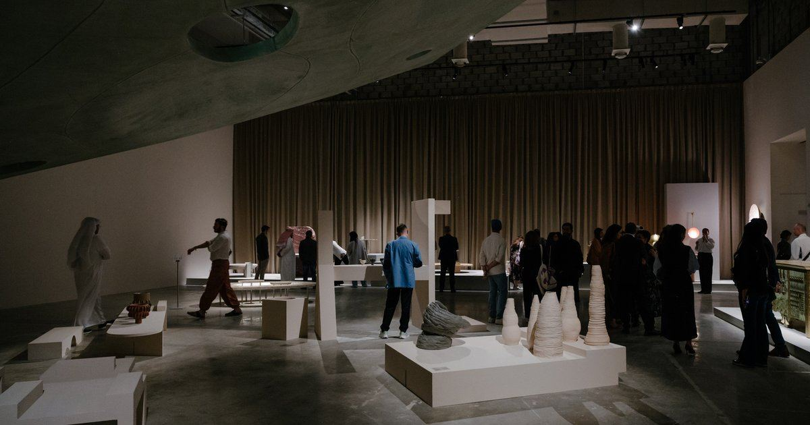

Festivals · Arts
Design Doha Biennial 2026
- Dates
- –
- Venue
- Fereej Al Asmakh, Msheireb (with Arab Design Now at Building i22)
- Location
- Doha, Qatar
- Format
- In-person
- Category
- Arts
- Industry
- Design
- Organiser
- Qatar Museums / Design Doha
- Official website
- https://designdoha.org.qa/en/biennial/about-biennial/
About
Postponed in April 2026 "in light of the evolving situation in the region" (QNA); now open 5 Nov 2026 - 31 Jan 2027. Mexico is guest country. Qatar dates are local (Arabia Standard Time, UTC+3).
Topics: design, craft, architecture.
No organiser attendance figure found on official pages (23 Nov 2026). Ranked by an estimated size tier 'large' (our judgement from format and scale, not an official number).
Sources
- Official — https://designdoha.org.qa/en/biennial/about-biennial/
- Official — https://designdoha.org.qa/en/hours-and-guidelines/
- State-news-agency — https://qna.org.qa/en/news/news-details?date=2%2F04%2F2026&id=qatar-museums-moves-doha-design-biennale-2026-opening-to-november